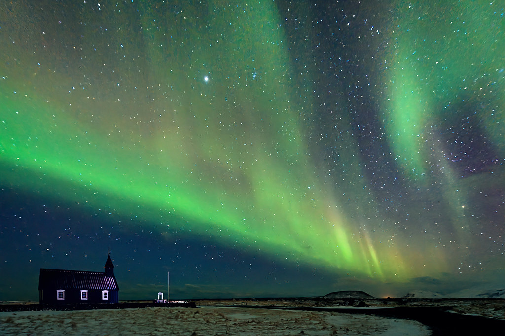
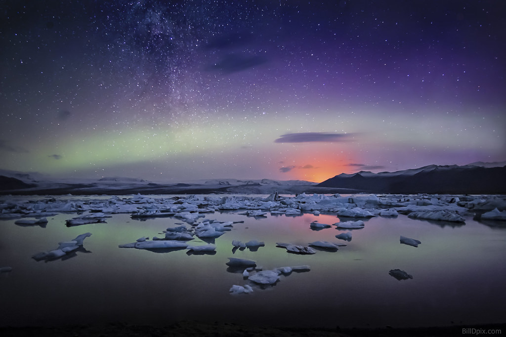
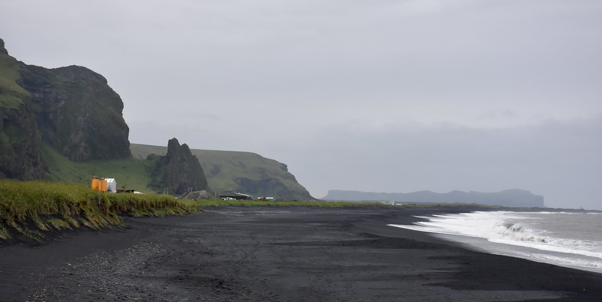

Iceland is an other-worldly Scandinavian country. Its landscape looks like it came directly from another planet. Volcanos, geysers, and hot spring are all very popular in the country. Iceland's viking history is also very popular among tourists. Look below for some more information on Iceland!
|  |
The best time to see aurora borealis in Iceland is between September and April. It's when the nights are dark enough to see the aurora. Unfortunately, no guarantees can be given as visibility depends on weather conditions. |
|  |
If Jökulsárlón is your only stop for the day and you're looking to have a leisurely visit, plan to spend about 4 hours there. This will allow plenty of time to enjoy the sights, go on a boat ride, eat lunch and spend some time at diamond beach. |
|  |
Reynisfjara is a black sand beach in Iceland located close to the town of Vik. Located close to the ring road, it's certainly worth a visit. You can explore the black sand of the beach, see the basalt sea stacks Reynisfjara and see the basalt columns that form the cliffs. |